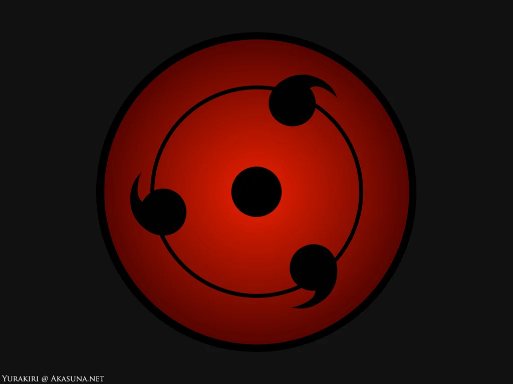
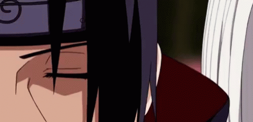
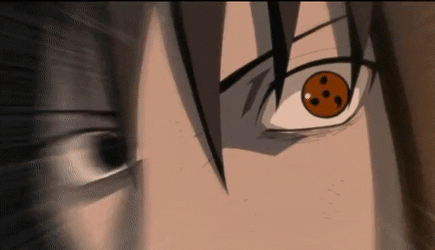
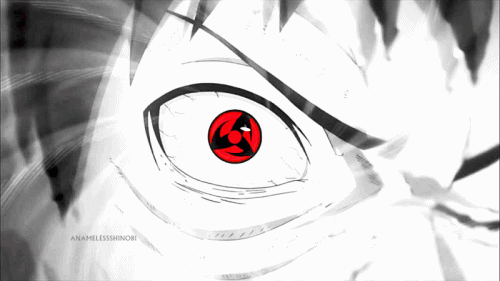
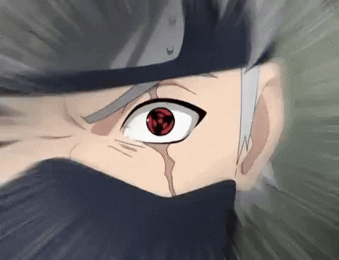

The Sharingan (写輪眼, Literally meaning:
Copy Wheel Eye, Meaning (Viz): Mirror Wheel Eye) is the dōjutsu kekkei genkai of the Uchiha clan that appears
selectively among its members. It is regarded as one of the "Three Great Dōjutsu", the others being the Byakugan
and the Rinnegan. While its powers originated from Kaguya Ōtsutsuki's Rinne Sharingan, its independent form was
first manifested by Indra Ōtsutsuki[3] (Hagoromo Ōtsutsuki in the anime).
When a wielder of this kekkei
genkai experiences a powerful emotional condition with regards to a person precious to them, their brain
releases a special form of chakra that affects the optic nerves, transforming the eyes into Sharingan; for that
reason the Sharingan is described as an "eye that reflects the heart" (心を写す瞳, Kokoro o utsusu hitomi). Often, as
per the Uchiha's so-called "Curse of Hatred", this emotion is a negative one, brought on by stress or loss. The
emotion can also be positive, driven by a desire to protect or reunite with a loved one.
Mangekyou Sharingan
| Itachi Uchiha | Sasuke Uchiha | Madara Uchiha | Obito Uchiha | Kakashi Hatake |
|  |  | |
 |  |